Relleno
Ya a las 6:50 p.m., luego de haber tomado un baño con agua bendita y peinarme, me senté a perder el tiempo porque sabía que el inepto humano que iba a ir conmigo a la fiesta de cumpleaños ni siquiera había entrado al baño —fui a ver klk con klk y nadando con los peces —. Luego de vagar, y cuando llegó de visita mi tía, a quien no veía como desde hacía dos años, sentí la presencia de un espíritu maligno.
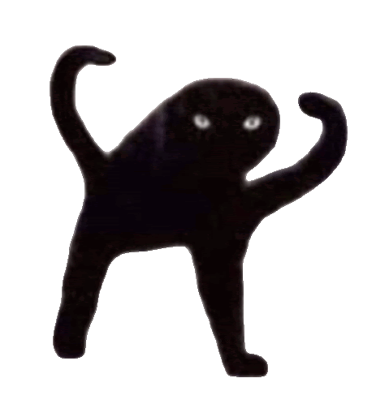
Era mi besto friendo —la acosadora—, que llegó luego de ir e irrumpir en la casa de mi escudero y ver que apenas se estaba bañando —vaya que vio…—. La acosadora llegó con su flow aesthetic —tuve que ir a buscar cómo se escribía en Google— y yo dije: bueno, pue’, vamos a ponernos los trapos para salir. Luego nos transportamos en mi Nimbus 2026 —la más nueva del mercado— y llegamos al más allá, es decir, la casa del escudero.
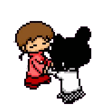
Cuando llegamos, por suerte se había cambiado. Ya eran las 7:50 y la invitación decía a las 7:00. No tenía tiempo para verle debatirse si Gokú le gana a Saitama, así que le dije que se haga un come y deja, y listo —parecía un delincuente n&gr$ pero vacano—; agarré los regalos, prometimos a su señora madre que íbamos a llegar a las nueve —¡JA! Como si esas cosas pasaran—, y nos montamos en un gato arcoíris para llegar más rápido.
Las impuntuales
Al emerger de las 99 cavernas, la cumpleañera nos estaba esperando con ganas de darnos un pase gratis de visita a Hades. She asked: Qin Shi Huang どこにいるの？, y yo le respondí: “yo qué sé”. Nos fuimos a buscarla; Nariyubi (la cumpleañera) estaba un poco nerviosa porque, si llegaban más invitados, ella tenía que recibirlos, y se le dijo: —Tese’ tranquila, doña, que de aquí se ve — estábamos a una calle de la entrada principal—.
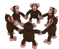
Decidimos quién iba a gritar para que supieran que estábamos ahí, y como me daba vergüenza, le dije a la acosadora que lo hiciera.
—UN JAPONÉS.
Y salió la china con un perro bazooka en la cabeza — se estaba definiendo los rizos—; no le dejamos terminar. Cada quién tomó su Meca Bestia y nos fuimos al cumple porque ya la cumpleañera iba a volar.
El cumple
Volvimos al cumple; ya había gente. Luego fueron llegando poco a poco y, como todo adolescente normal, me dispuse a utilizar el teléfono y ver qué encontraba. Pasó el tiempo y nos trajeron vino, y pues… como yo soy yo, me lo bebí como si fuera jugo. Luego del tercer vaso comencé a levitar (aún no flotaba); aunque todavía estaba normal, solo que mi cabeza tenía un peso menos.
Ya no recordaba cuánto bebí. Jackie Chan me había dado su vaso de vino porque, según recuerdo, decidió no emborracharse. Quedé en shock — bueno, no—, pero después no le di mucha mente y seguí degustando del vino mientras usaba el teléfono de la acosadora.

Mientras tanto, en otro lado —A unos 4 metros —, la cumpleañera se cayó porque estaba más borracha que yo. Se llevaron a una chamaquita que también bebió como si fuera agua; le pegó más fuerte —jsajsjajs a—, digo, bebió como si estuviera en una competencia con el diavolo.
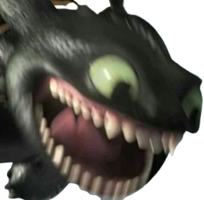
Borracho
Después de unos 4 vasos consciente — una parte de mí se niega a admitir que fueron más—, llegó la comida — no duró mucho en mi estómago—. En lo que comíamos, comenzó a caer una suave llovizna y la cumpleañera se cayó de nuevo.
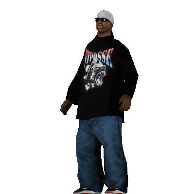
Luego de comer, le dije a dos babosos que conocía — Mis primos— que no se fueran para que me acompañaran a llevar a la acosadora a su casa. La verdad, no era buena idea andar por la calle borracha, pero no estaba tan mal; solo lloré porque mi escudero estaba triste, ya que nos pasamos de la hora acordada con su ama (ya eran las 11:13 p. m.), y de una vez me estaba riendo.
Compraron helados; yo no quería, así que nos fuimos luego de dejar a la acosadora a unos metros de su casa.
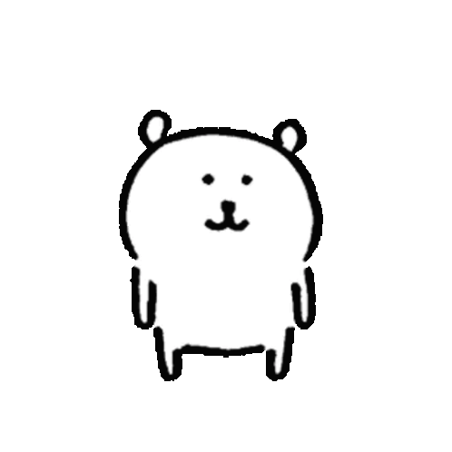
La verdad, no recuerdo tanto del camino de vuelta a casa, pero sé que iba todo el camino pidiendo perdón a mi escudero, aunque él dijo que estaba bien, que no era mi culpa — è davvero buona—. Al final, nos despedimos y se fue hacia su caverna.
.
Yo, por mi parte, llegué a casa casi cayéndome; solo quería abrazar mi almohada. Llegué, me deshice de todo lo que me molestaba y me acosté con una risa histérica queriendo salir, aunque no la dejé; comencé a reír bajito. La Suprema Dama me estaba diciendo algo, pero sinceramente no recuerdo.
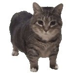
Luego de un rato, sin poder dormir, decidí escribirle a mis compas… no fue tan buena idea; escribía con las teclas que encontraba — me las arreglé para insultar un par de veces—. Creo que llegué a decir algo que no iba a decir nunca, pero meh, ya da igual. Seguí molestando y agradezco que me hicieran caso, hasta que me mandaron a mimir y cerré la laptop.

Pero no por eso me dormí; trataba de dormir, pero no podía. Hasta que, de pronto, tuve unas cuantas arcadas y solté todo lo que tenía en la panza. Suerte que había asomado la cabeza al piso. Me quedé mirando el techo por horas, creo… no sé.
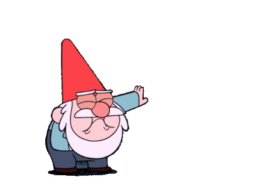
No descansé muy bien; dormía en pequeños lapsos de tiempo y despertaba. Así me la pasé hasta las seis de la mañana del viernes. Me levanté de la cama y me dirigí con paso desigual a la sala; me recosté en el mueble de dos plazas y me quedé observando a la nada. Luego de disociar y esperar a que se hiciera más tarde para ir a comprar un Gatorade, tras otro desconcertante lapso de tiempo, me dispuse a salir de mi aturdimiento.
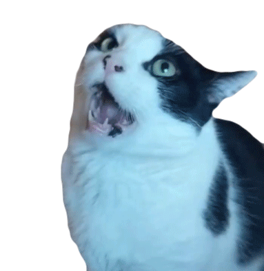
Fui a la cocina y preparé una sopa; cuando estuvo lista, la consumí lentamente mientras veía Harry Potter y el prisionero de Azkaban . Después de eso, me sentí mejor, así que me acosté de nuevo y sí pude conciliar el sueño. No supe más de mí hasta la una de la tarde.
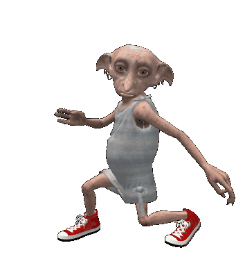
Reflexiones reflexivamente reflexivas
—No es bueno beber sin haber comido, pero es peor levantarte temprano sin haber dormido.
—No te preocupes por socializar cuando puedes dormir.
—Si escuchas voces, es una de dos: o estás loco, o eres harry potter.
—Si Eli Shane decidió escaparse a vivir bajo las alcantarillas, ¿por qué tú no puedes vivir bajo un puente?
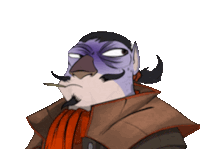
Conclusión
Cuando me levanté de nuevo, recordé algo que no había tenido en cuenta; no recordaba que uno no podía consumir alcohol sin nada en el estómago, porque sí, no había comido nada en el día, ni siquiera agua, y por eso vomité lo único que me había comido.
—QUE SE REPITAA (╯°□°）╯︵ ┻━┻